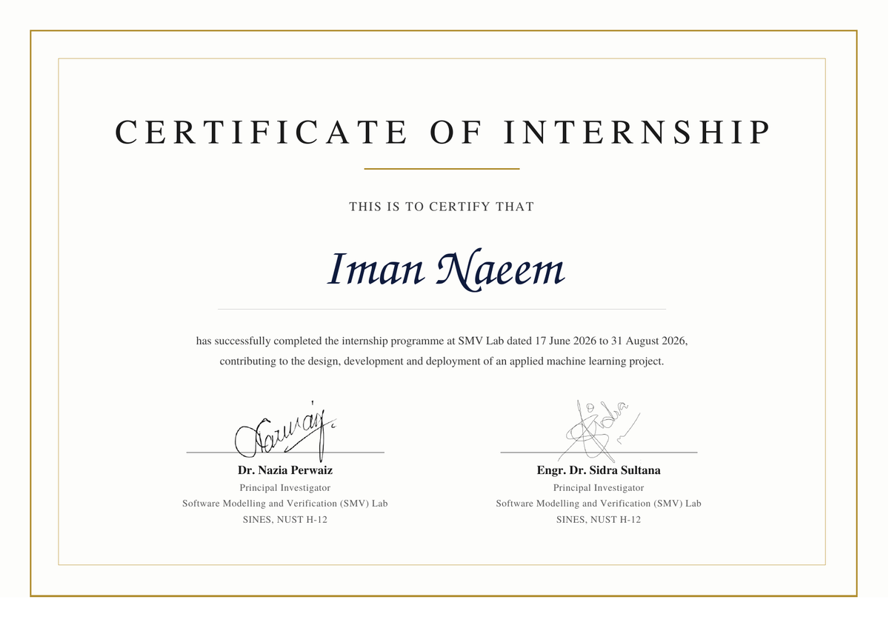
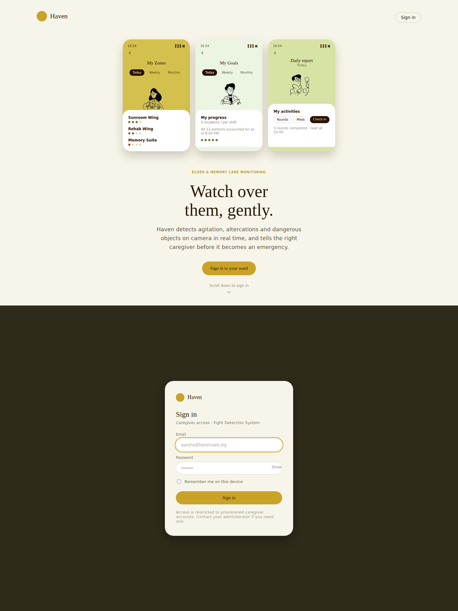
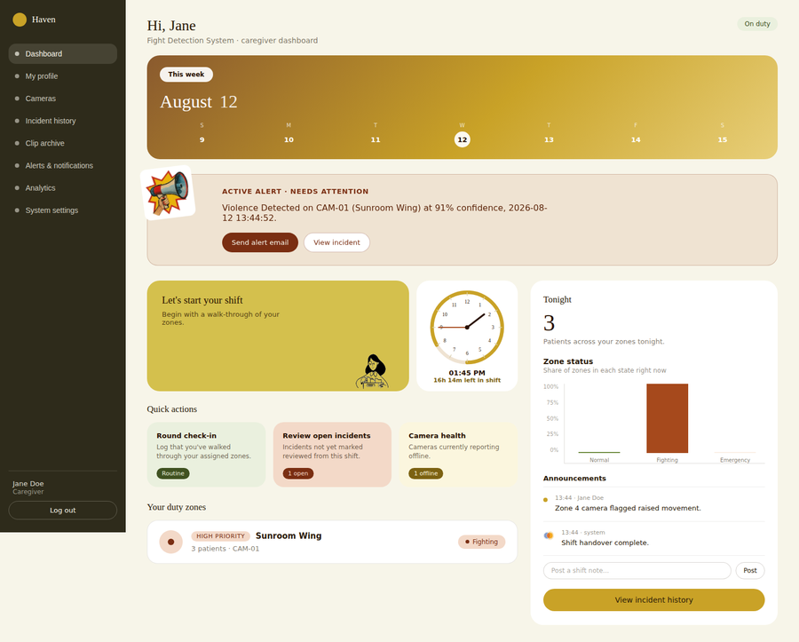
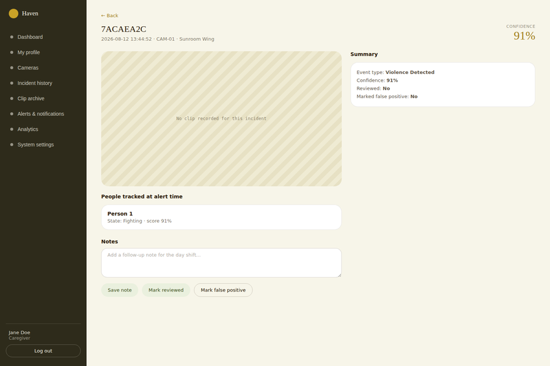
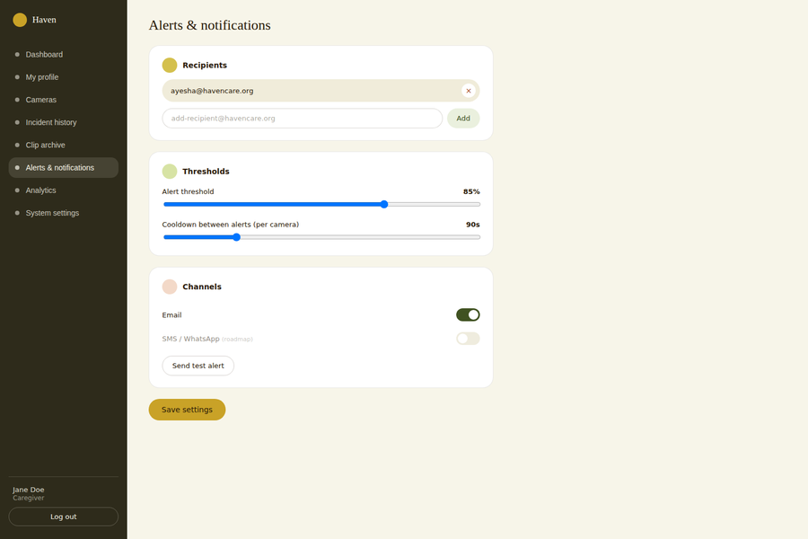
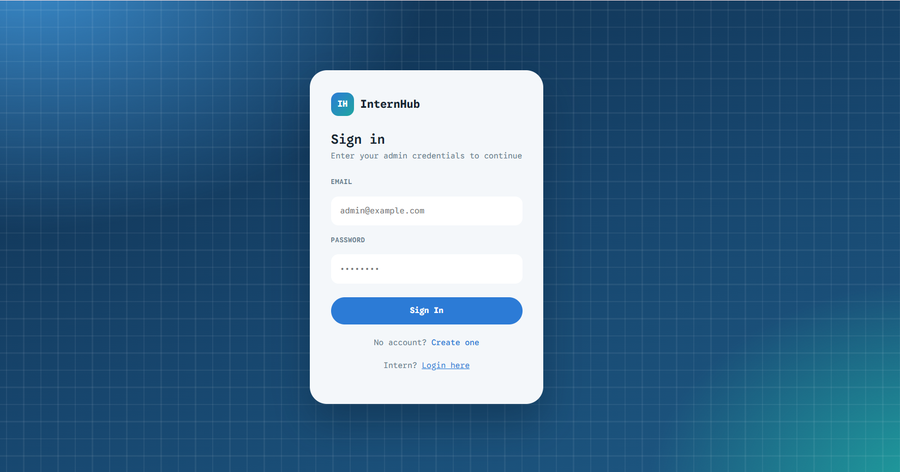
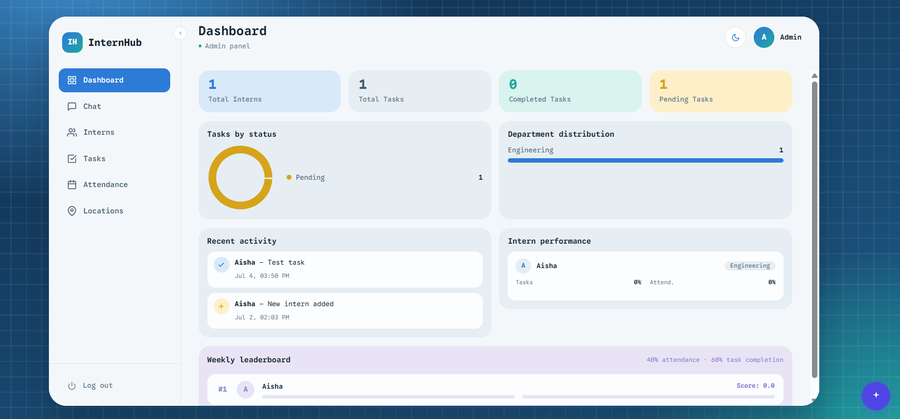
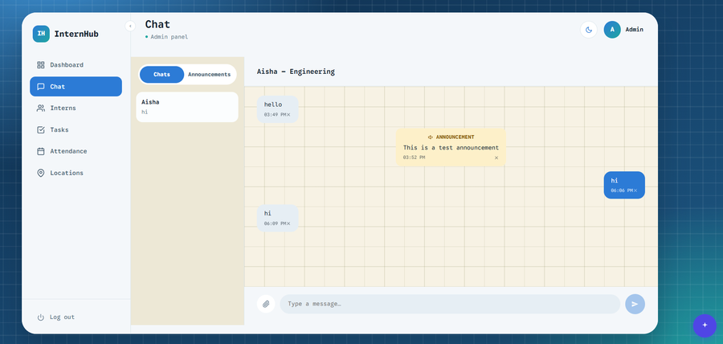
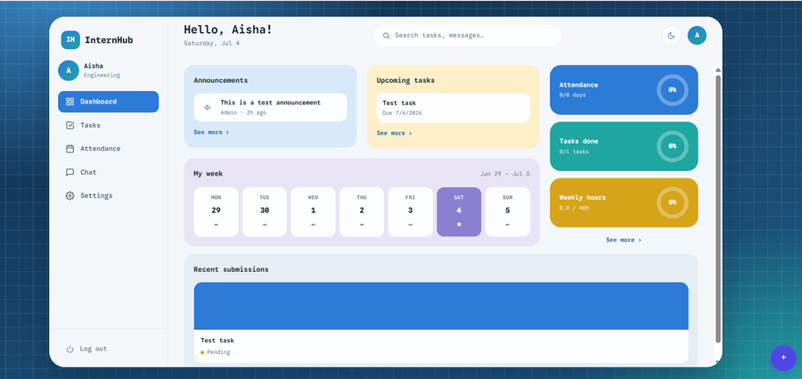

Data science student and engineer focused on whether ML results can be trusted: data pipelines, validation, and production APIs built to hold up under real load. My focus is correctness at the boundary: pipelines that can't leak the future into the past, webhooks that can't double-fire, backtests that don't lie. That discipline runs through everything I build, from a live PSX equity-analysis platform tracking 6+ years of market data to TSAuditor, a time-series data-quality auditor on PyPI, three merged contributions to statsmodels' ARIMA, ARMA and ARDL estimators, and a real-time CCTV violence-detection pipeline co-built during my SMV Lab internship. I am currently an intern at the KBS Lab, SEECS, working on an LLM-based cooking assistant.

internship_certificate ↗A night-shift caregiver covering several wards can't watch every hallway at once, and static motion-detection cameras fire on every passing shadow. Haven watches actual behavior instead: YOLO11n detects people, an EfficientNet-B0 classifier scores each interaction, and an independent 6-state machine per tracked person (Normal → Proximate → Agitated → Fighting → On Ground → Emergency) only escalates once a sustained pattern is confirmed, not one noisy frame. Confirmed incidents auto-record a clip, email the right caregiver, and log to a role-gated dashboard for review.

Caregiver sign-in
Live dashboard
Incident detail
Alerts & notificationsReplaces the spreadsheet-plus-WhatsApp-group way of running an internship program. Interns check in from a phone; the location is verified against a geofence and their face is matched against a stored descriptor before the check-in is accepted. Tasks are assigned and reviewed with full history, admins get a dashboard plus Slack digests and email alerts, and every organization that signs up gets its own isolated workspace — the same deployment serves many companies without any of them seeing each other's data.

Sign-in
Admin dashboard
Team chat
Intern dashboardMost profiling tools treat rows as independent and miss what actually breaks time-series models: irregular timestamp frequency, non-stationarity, and features that quietly leak the future into the past. tsauditor scans a DataFrame for exactly those problems, scores overall data health, and exports an audit-ready report, so nothing gets modeled until it's been checked.
Featured in PyCoder's Weekly #745, Data Science Weekly #657 (#7), and Python Digest Russia #659, plus mentions on Python Hub and Planet Python.
Issue 6159 sat open since 2021. A restriction in statsmodels blocked ARIMA configurations that applied seasonal differencing without also requiring seasonal AR/MA terms. I traced it into the Hannan-Rissanen estimator, fixed the underlying constraint, and got it merged into main.
Let callers hold specific ARMA parameters fixed while the innovations MLE estimator fits the rest, instead of forcing a full re-estimation every time.
Reapplying or appending to a fitted ARDL model was silently dropping the exogenous-variable lag order, which meant the resulting model wasn't actually equivalent to the one it claimed to extend.
scikit-learn issue #34344 looked like a library bug crashing CI. Root-caused it instead to a regression in the Cython compiler itself and filed it upstream against Cython, rather than chasing a fix in the wrong codebase.
Now applying that same discipline to fintech, where broken chronological continuity and subtle leakage don't just hurt accuracy, so they produce backtests that lie. Building reproducible pipelines for financial time-series, market-data ingestion, and risk & trading analytics, where every model trains on data that's been audited first.